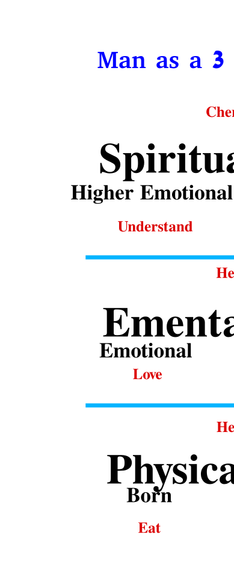

Next: Diagrams Up: chaps Previous: Authors' Note Contents
Neither shall they say, Lo here! or, lo there! for, behold, the kingdom of God is within you. — Luke 17:21
Science people and Religious people often put themselves on opposite sides of many issues. Sciencers see the historical carnage that we have perpetrated on ourselves, and conclude that spiritual is bad. (Its worth noting that most religioners heartily agree with the first part of this, but come to the opposite conclusion.) Religioners see the moral decay of our society and are aghast. (Its worth noting that most sciencers will agree with this.) What none of them realize is that both sides are making the same mistake! Spiritual documents such as the Bible, Koran, Hindu scriptures, etc. are all primarily spiritual in nature. Their primary purpose is to guide our inner (spiritual) development! What you are looking at is not many competing views on how to run the world, but different perspectives, ways of looking at and describing the same INNER SPIRITUAL JOURNEY. This journey is the key to mankind's next steps in its evolution, and has the possibility to take us past the fighting, squabbling, and killing that has thus far been the norm for our human race.
This idea of an inner God is foreign to sciencers and religioners alike. It is, however, well known to the 12 steppers of the world, who have taken this concept to heart and practiced it from a multitude of different starting points of view. (See AA's Big Book) They have found that this idea of an inner, personal God is practicable by pretty much anyone, and its efficacy has been shown over and over, millions of times, often producing results that are miraculous not only to those directly involved, but many outside observers as well.
What has this got to do with us? you may ask. We're not alchoholics or addicts. We don't need these so-called miracles! Well, let's imagine that sciencers and religioners both took this to heart and starten practicing it. Could such a sciencer, realizing that God is within him, possibly learn to speak christian and to pray alone and with others? Could he perhaps go to a church and interact civilly with the religioners? Could such a christian go to a science gathering learn to speak science without even being uncomfortable? The most interesting thing here is that both points of view, God within and outside of us have truth and merit. For example, all human beings have egos a lot bigger than they should be, and this fact causes a superabundance of problems, both for each of us personally, and in the world at large.
People who are ready to begin an inner (spiritual) journey must be ready to look inside of themselves and strive to change and improve themselves. It important to note that IN ORDER TO HELP YOURLELF, YOU MUST HELP OTHERS. Turning your attention inside of yourself and helping others to do so, is a first key step in the process, a metanoia or change of mind that is paramount. In life we often think that we must make a choice between helping others or helping ourselves. In almost all situations if you look at a few more possibilities, we will be able to find a course of action that better for both or all parties involved. One object of these Games is to give us the tools to do this. The diagrams give the basic knowledge necessary to better understand ourselves and others. One of the most prominent features of our beings is the tendency to bring things down to only two choices. This type of binary thinking is a necessary prerequisite for all of our worst negative emotions. By looking inside of ourselves we can begin to find a multitude of other ways to manifest in life that do not involve either of the two possibilities initially presented by our habitual ways of thinking and feeling. The more you practice this, the better you will get at it, and begin to soar above the binary, yes or no thinking and feeling that keeps us trapped in the lowest parts of ourselves. This is an amazing freedom that no one ca ever take away from you. So come, look inside, discover the innumerable possibilities which await you in the higher parts of yourself, which is not only your right, but you duty!
[pages=1]cards-emental-physical.pdf [pages=1]cards-spiritual.pdf
